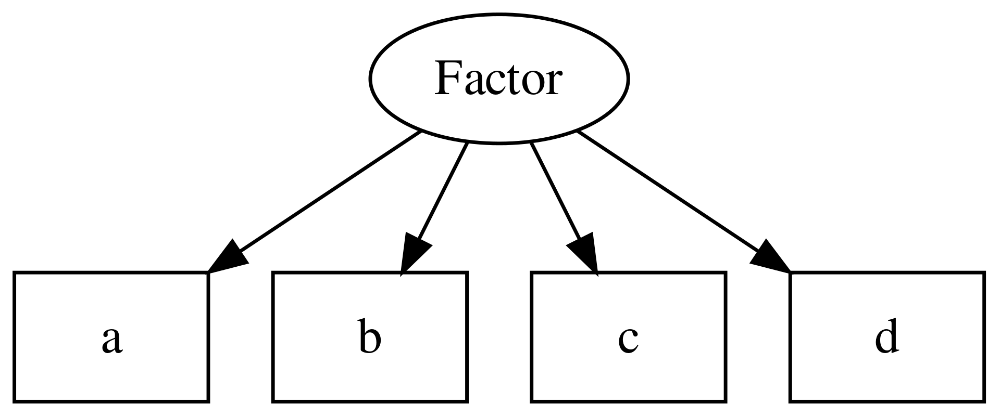

Latent Variable Theory
Recap
CTT decomposes observed scores into a true score and error:
\[X = T + E\]
The true score is defined as the expectation of the observed score — it is intrinsically tied to a specific test.
Limitations of CTT
- The true score has no independent meaning outside the test
- What if someone skips a question?
- What if we want to give different people different sets of items?
- What if we want to adapt which items are asked based on prior responses?
These are not mere inconveniences — they reveal a deeper problem about what CTT is actually measuring.
CTT does not adequately represent attributes!
Its operationalist view is too restrictive.
Latent Variable Theory

Borsboom D. Measuring the Mind: Conceptual Issues in Contemporary Psychometrics. Cambridge University Press; 2005.
Latent variable theory represents the attribute of interest explicitly in the model formulation.
It offers a formal structure that
- links test scores to hypothesized attributes (i.e., latent variables)
- deduces empirical implications of the model (i.e., conditional independences)
- offers a means to test if a model adequately fits empirical data!
Recall that CTT is unfalsifiable by data.
Latent variable models the data-generating mechanism, in which the attribute is represented explicitly as a latent variable.
It requires making choices to constrain the model; these constraints needs to be justified using theory!
Models are underdetermined / the data does not speak for itself.
Types of models in this category
- factor analysis (Spearman, 1904)
- confirmatory factor analysis
- item response theory
- latent structure analysis (e.g., latent class analysis)
- …
A unified framework: “Generalized linear item response theory” (GLIRT)
Mellenbergh, G. J. (1994). Generalized linear item response theory. Psychological Bulletin, 115(2), 300–307. https://doi.org/10.1037/0033-2909.115.2.300

<! –
Open questions
What do the arrows mean? - causality?
What is the meaning of the latent variable?
What ontological status do latent variables have? - real vs useful fiction?
–>
3 key questions
- syntax: how do we relate the observed responses to latent variables?
- semantics: how do we interpret the “expected response” to an item?
- ontology: what type of things are the latent variables and relationships in the model?
Borsboom D. Measuring the Mind: Conceptual Issues in Contemporary Psychometrics. Cambridge University Press; 2005.
Syntax: a general form
\[g[\mathbb{E}(U_{ij})] = \beta_j + \alpha_j * \theta_i\]
- \(g()\) := link function
- \(\mathbb{E}(U_{ij})\) := expected response of person \(i\) to item \(j\)
- \(\theta_i\) := parameter(s) about the person \(i\)
- \(\beta_j\), \(\alpha_j\):= parameters about the item \(j\)
There are many variants of this!
many variants…
for combinations of
- type of observed variable (e.g., continuous, categorical)
- type of latent variables (e.g., continuous, categorical)
- the link function used (e.g., identity, logit)
Example:
- cont, cont, identity: factor analysis
- dichotomous, continous, logit: item response theory
Item Response Theory
IRT is a special case of latent variable models;
there are many variants within IRT.
- Rasch model (1 parameter model)
- Birnbaum model (2 parameter model)
- 3, 4 parameter models
- and many more
IRT: core ideas
\[ln[\frac{\mathbb{E}(U_{ij})}{1-\mathbb{E}(U_{ij})}] = \beta_j + \alpha_j * \theta_i\]
Person and item parameters are combined linearly to produce an output variable
That output variable is the logit of the expected response:
logit is the natural log of the odds ratio;
Note: It is more common to see IRT equations presented using the inverse link function instead of the link function
link function (logit): \[ln[\frac{\mathbb{E}(U_{ij})}{1-\mathbb{E}(U_{ij})}] = \beta_j + \alpha_j * \theta_i\]
inverse link function (logistic): \[\mathbb{E}(U_{ij}) = \frac{1}{1+ e^{-(\beta_j + \alpha_j * \theta_i)}}\]
\[P(X = 1 \mid \theta) = \frac{e^\theta}{1 + e^\theta} = \frac{1}{1 + e^{-\theta}}\]
Coding
Exercise
Exercise
How is this equation different from the one in Classic Test Theory?
\[ln[\frac{\mathbb{E}(U_{ij})}{1-\mathbb{E}(U_{ij})}] = \beta_j + \alpha_j * \theta_i\]
Recall, CTT:
\[X = T + E \]